Learning Objectives
After completing this lesson, you'll be able to:
- Understand the difference between Schedules and Automations.
- Understand the different types of Schedules on FME Flow.
- Create and trigger a Schedule on FME Flow.
Resources
- Starting FME Flow Project | C:\FMEData\Workspaces\AutomateWorkflowsWithFMEFlow\automate-workflows-with-fme-flow--starting-project.fsproject
If you're taking a live Safe Software-hosted training course or using an on-demand lab for this course, we've already imported the content for this lesson into your FME Flow.
If you're completing this lesson with your own FME Flow, you must import the starting project with the content into your FME Flow.
Expand for Steps to Import the Starting Project
3) Navigate to your FME Flow and open Projects. Click Import.
4) Upload automate-workflows-with-fme-flow--starting-project.fsproject as the Project File and then click Import.
5) The first step is Preview Content, where you may choose not to overwrite existing items. If all your items are New Items, you don't need to worry about overwriting existing items. Click Continue.
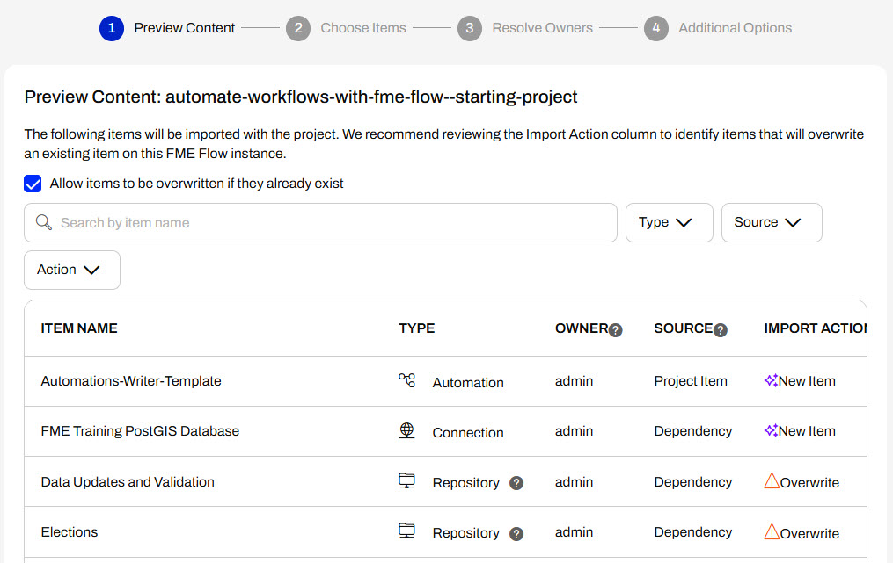
6) The next step is to select connections and tokens to import. By default, they are not selected to be imported. Select the FME Training PostGIS Database Connection to import. If it isn't imported, the workflows will not run successfully. Click Continue.
7) The Resolve Owners step only allows you to reassign the project contents to a different user if the admin user doesn't exist on your FME Flow. Click Continue and then click Import Project from the Additional Options step. The project will import and display its import status from the same page.
If the project import failed, check that you uploaded the encryption key and repeat the process. If it still fails, contact us at train@safe.com.
What are Schedules?
Schedules allow you to run a workspace on FME Flow at specific times in the future. You can configure a Schedule to run your workspace once at a particular time or repeatedly on an interval. Once you create and enable a Schedule, the FME Flow Core ensures the workspace submits to run at the correct time in the future. When a scheduled time occurs, the Core sends the workspace to the FME Flow Engines for processing.
You can run a workspace on a schedule with Automations in FME Flow, which you will learn about in the next lesson. The main advantage of using Automations to create scheduled workflows is using multiple workspaces and external actions. In contrast, Schedules limit you to only running one workspace and give you an additional option to run the workspace only once in the future.
Creating Schedules
To create a Schedule to run a workspace, expand Schedules on the side menu and select Create Schedule. A form opens for you to fill out to choose your workspace and set your schedule.
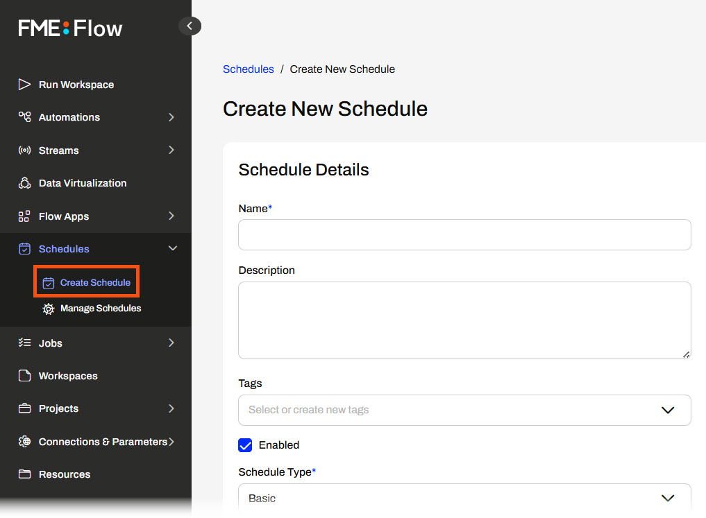
You must name your schedule and optionally give it a description and tags.
The Enabled option determines whether the Schedule will run actively. If you select Enabled, it will run on the schedule you configure as soon as you finish creating it. If you do not select Enabled, FME Flow creates the Schedule, but FME Flow will not actively monitor and run it.
Next, you configure the Schedule Type, which sets when and how often your workspace will run in the future.
Schedule Types
There are four different schedule types that you can set for Schedules:
- Basic
- Repeats based on a calendar-friendly selection of intervals derived from a specified Start time
- For example, you schedule the workflow to run weekly on Tuesdays.

- Repeat on Interval
- Repeats in intervals from a list of predefined units.
- For example, you set the workflow to run once every 3 hours.
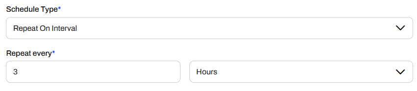
- CRON Expression
- Repeats based on your cron expression.
- For example, you use the expression 0 0,15 0,8 LW * ? * to trigger the workflow to run at 8:15 am on the last weekday of every month.
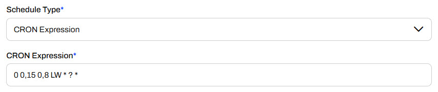
- Occur Only Once
- Runs once only at the specified Start time.
- For example, you need to run your workspace once at a set time and date in the future, like next Wednesday at 9:15 am.
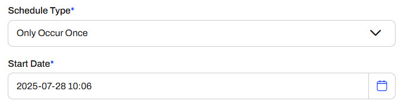
Date Range
The following section allows you to set a date range for FME Flow to run the schedule for all Schedule Types except Only Occur Once. You enter the date and time for the schedule to start running the workspace, and optionally, enter a date and time when FME Flow will stop running the schedule. You can select Start Immediately to begin running the schedule as soon as you finish creating it. Likewise, you can choose the Does Not Expire option if you want the schedule to continue to run until you manually stop it.
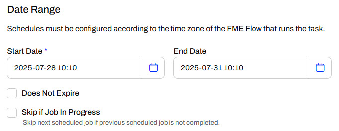
Workspace
To set the workspace you want to run on the schedule, select the repository housing the workspace and then the workspace itself. If the workspace has any Published Parameters, a new section will appear for you to configure the parameter values you'd like the workspace to use when running on the schedule. FME Flow automatically selects the Use Default option for the parameters. You may deselect it and configure a different parameter value.
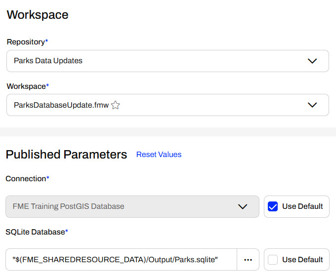

For more information on Parameters, see Build Self-Serve Workflows with Parameters and Create Flexible Workspaces with Parameters.
The last two sections are optional for you to configure. Notifications allow you to select a Topic to which FME Flow sends a message after completing the workspace translation. The Advanced section includes Job Queue control, expiry times, and an option for Log Debug mode.
Once you're satisfied with your schedule settings, click Create to finalize and create it. You will see it from the Manage Schedules page.
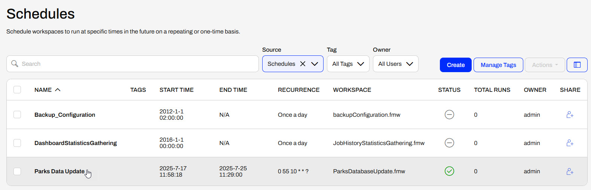
If you need to edit the schedule, you can access it by clicking on it on the Manage Schedules page. You can edit all schedule settings except the name of the schedule.
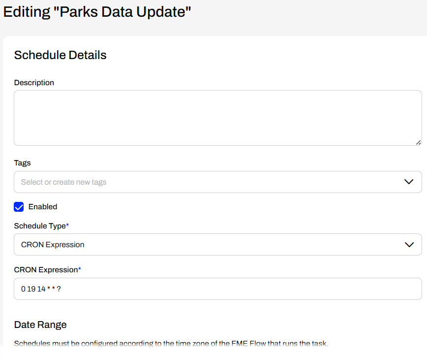
Testing Schedules
You may test your schedule before FME Flow triggers it to run, giving you more confidence that the workspace will function on the schedule as you expect. From the Manage Schedules page, click the box to select your schedule, expand the Actions options, and then select Trigger. FME Flow will immediately submit the workspace to run as you configured it in the schedule.
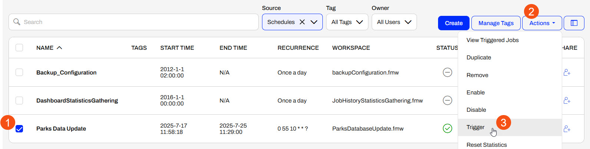
Exercise

Jennifer, a GIS specialist in a city's GIS department, frequently runs a workspace to update Parks data between two databases. Her workspace reads Parks data from a PostGIS database and updates a SQLite database with the data. Jennifer tries to remember to run it daily, but sometimes she forgets. To avoid data inconsistencies and ensure the SQLite database is consistently kept up-to-date, Jennifer will configure this workspace to run on an FME Flow Schedule.
Follow along with Jennifer's steps as she creates and configures the workspace to run daily on FME Flow.
1) Create a Schedule
Jennifer has already published her workspace to FME Flow, ParksDatabaseUpdate.fmw, stored in the Parks Data Updates repository.
On the left-side menu of FME Flow, Jennifer clicks Schedules, then Create Schedule.
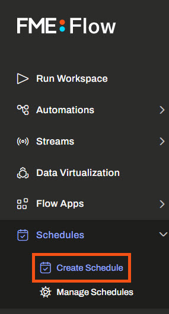
The Create New Schedule form opens.
Jennifer names the schedule Parks Data Sync Schedule and sets the Schedule Type to Repeat on Interval. She sets the interval to repeat once a day.
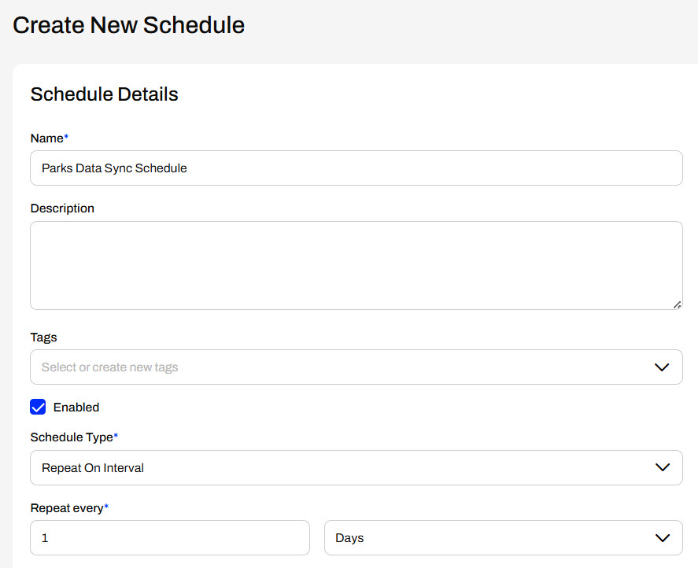
Under the Date Range, Jennifer opens the calendar and sets the schedule to start tomorrow at 8:00 am.
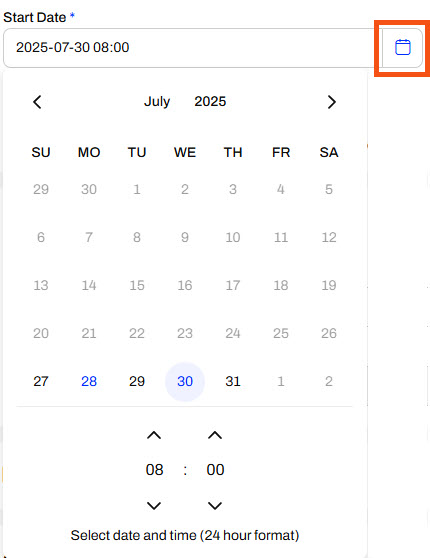
She leaves the End date blank and ensures Does Not Expire is selected. Her schedule will start running tomorrow until she or one of her colleagues with access to the schedule manually turns it off.
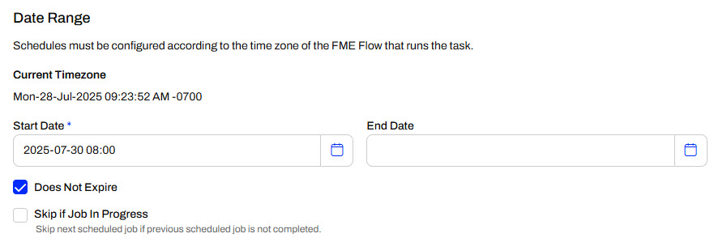
For the workspace to run on the schedule, Jennifer selects the Parks Data Updates repository and the ParksDatabaseUpdate.fmw workspace.
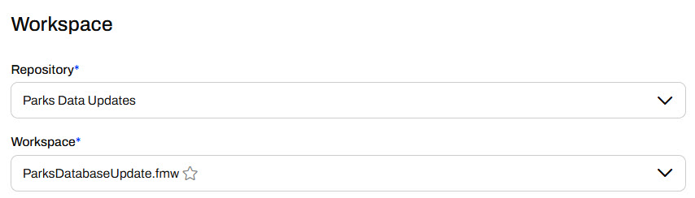
This workspace has two published parameters - one for a database connection and one for the SQLite database output location. Jennifer does not need to alter these, so she leaves them with the default values. The workspace writes the SQLite database to the Output folder in FME Flow's Resources Data folder, specified by the $(FME_SHAREDRESOURCE_DATA) parameter.
Jennifer does not set any settings in the Notifications and Advanced sections, scrolls to the bottom of the page, and clicks Create.
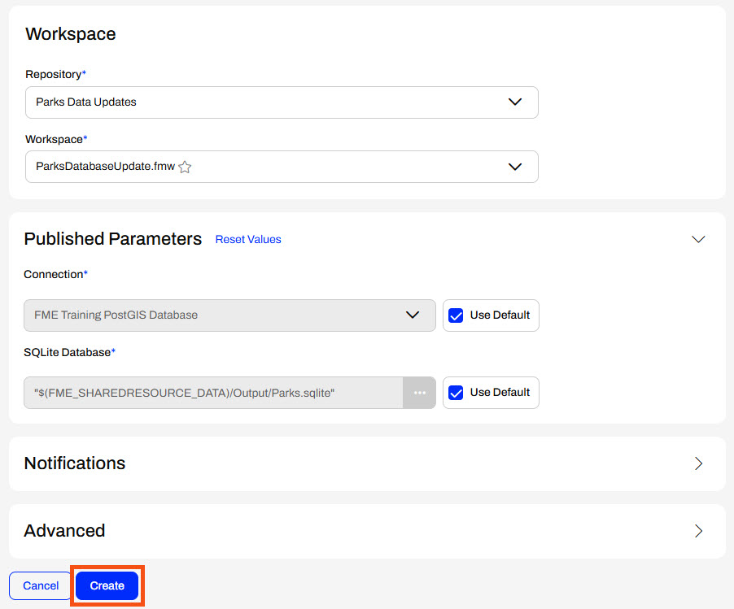
Jennifer sees her new schedule on the Schedules page and ensures it is active.
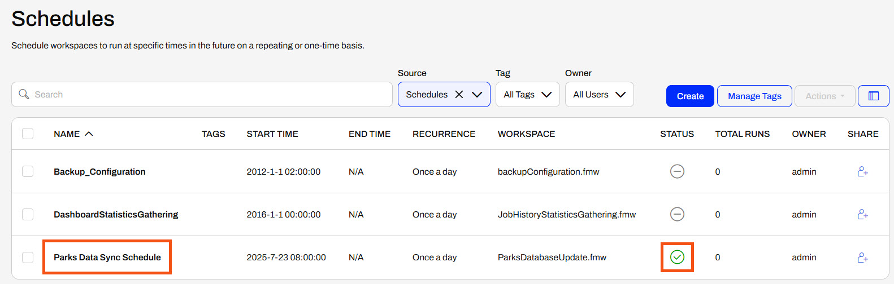
2) Trigger Schedule to Test
Jennifer's schedule will run at 8:00 am tomorrow. She wants to check that the workspace runs as she expects and updates the SQLite database in Resources. She selects the Parks Data Sync Schedule, expands the Actions menu, and selects Trigger.
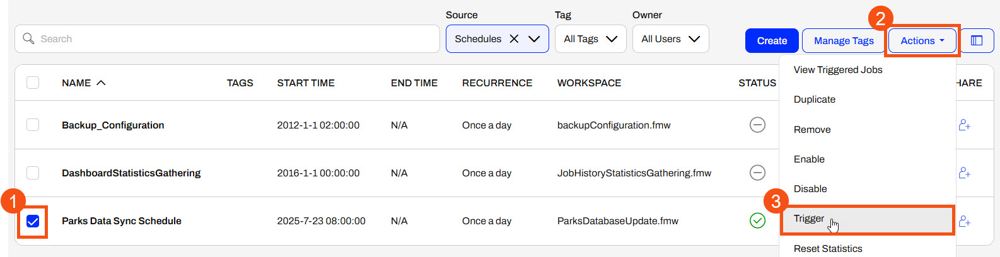
FME Flow triggers the schedule and runs the ParksDatabaseUpdate.fmw. Jennifer navigates to Resources > Data > Output and ensures the timestamp of the Parks.sqlite database shows it was recently updated.
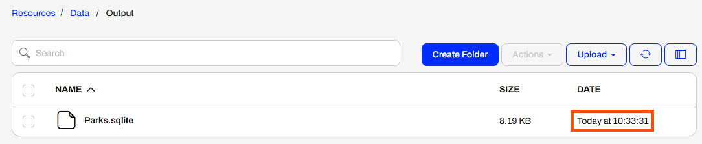
Jennifer has successfully created a schedule on FME Flow to run a workspace daily. Automatically running the workspace on a schedule decreases the time she spends manually running the workspace each day and ensures data consistency across the databases.